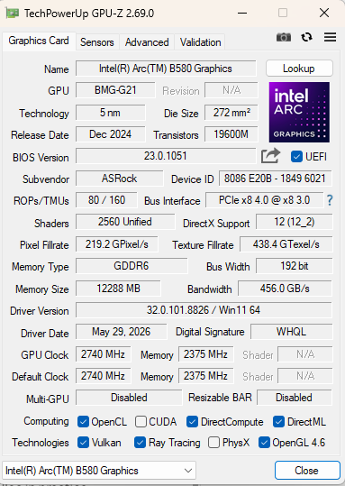
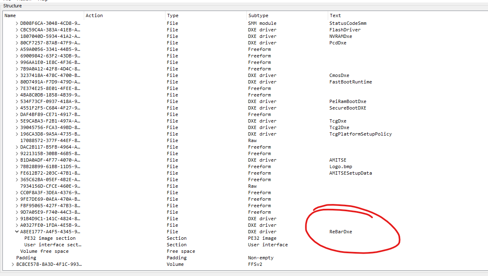
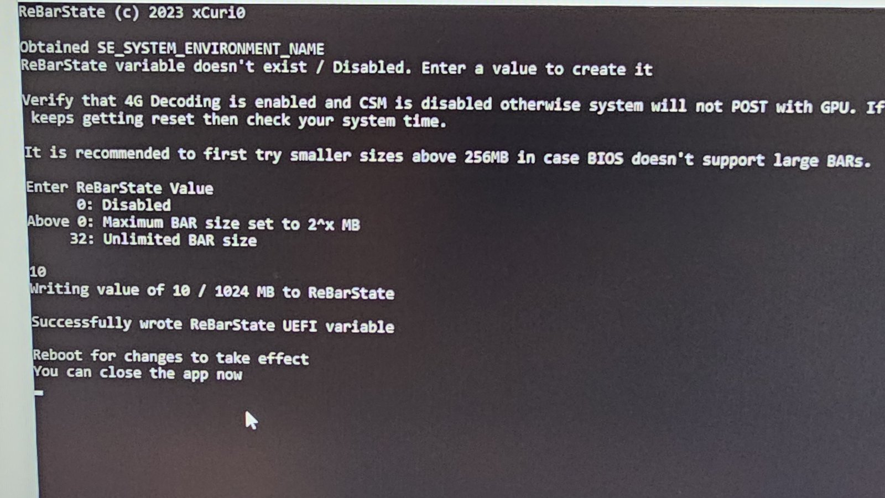
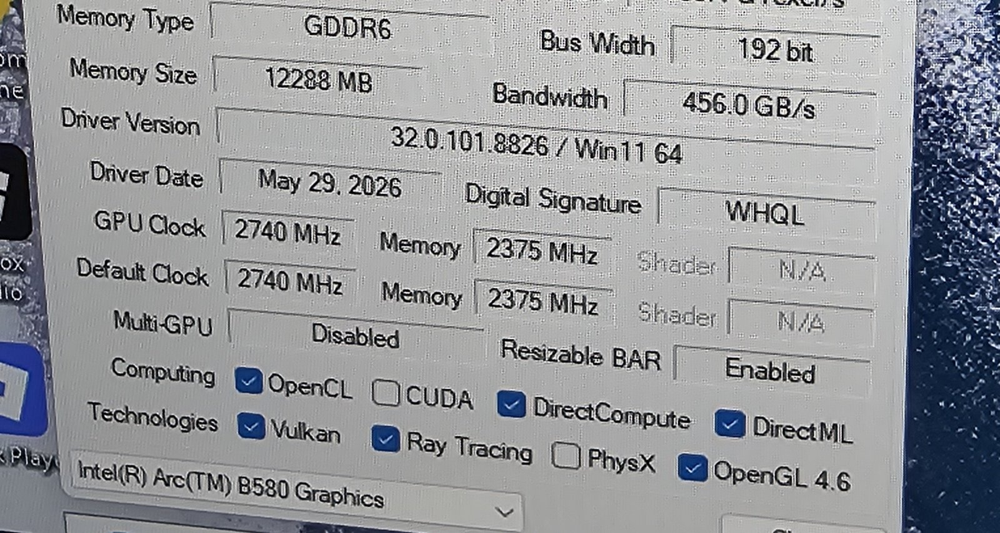
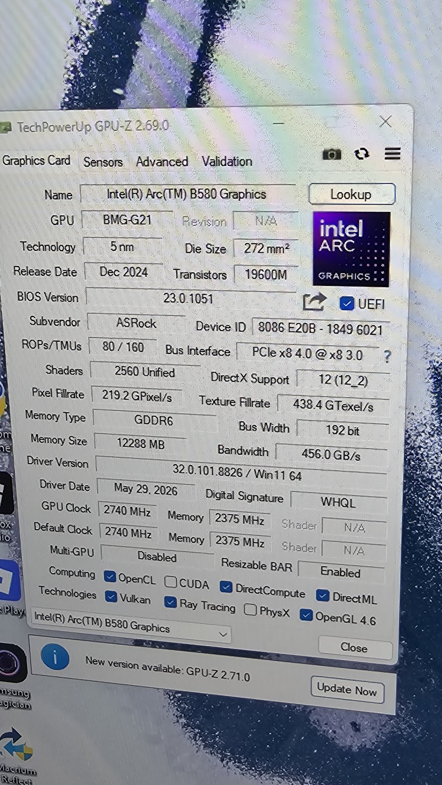
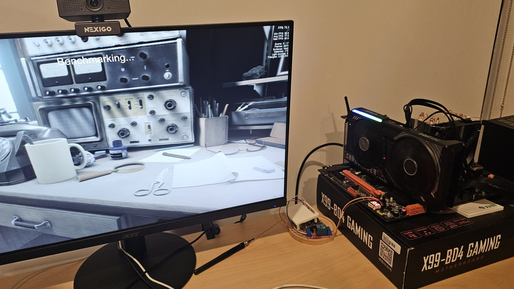
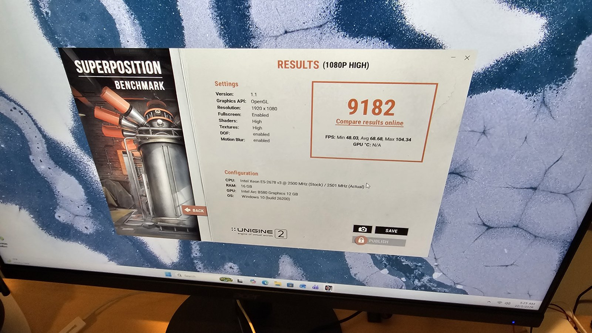

X99 build series: The build · mistral.rs vs llama.cpp · Four LLMs compared · Wake on LAN · ReBar BIOS mod · CMP 40HX unlock
Stock X99 firmware has no Resizable BAR, which Intel Arc cards need for full performance. I inserted the ReBarDxe driver into the board's BIOS, caught a 16-byte corruption that UEFITool introduced in a volume I never edited, fixed it, and flashed the board. GPU-Z now reports ReBar as Enabled on the B580.
Intel recommends Resizable BAR (ReBar) for Arc cards because performance drops noticeably without it, and the stock X99 firmware doesn't have the option. I followed the ReBarUEFI wiki to insert its open source ReBarDxe driver into the board's AMI Aptio V firmware.
| Item | Details |
|---|---|
| Motherboard | Huananzhi X99-BD4 Gaming, Intel B85 (Lynx Point) chipset |
| Firmware | AMI Aptio V, version 5.11 (11/01/2020), UEFI |
| Flash chip | 16 MB Winbond W25Q128BV |
| CPU | Intel Xeon E5-2678 v3 (12 cores, 24 threads) |
| Memory | 16 GB DDR4-2133 ECC RDIMM, dual channel |
| GPU | ASRock Intel Arc B580 Challenger, 12 GB GDDR6, PCIe 4.0 x8 running at 3.0 x8 |
| Tools | UEFITool 0.28, UEFIPatch, Intel FPT 9.1, ReBarState, GPU-Z, HWiNFO64 |
Before the mod, GPU-Z reported Resizable BAR as Disabled.

I started from full_backup.bin, a 16 MB dump of the whole flash chip including the Intel flash
descriptor, and never touched it so I'd have something to compare everything against.
0x890000, 5 MB, 236 files, about 2,038 KB free.ReBarDxe.ffs, and saved the result as patched_image.rom.0xB92678, leaving about 2,035 KB free.
UEFIPatch, run with the patches.txt from the ReBarUEFI repository, reported "No patches can be applied
to input file". I also tested every pattern against the decompressed modules by hand and none matched. Disassembly of
PciBus showed a vendor variant with a 64-bit MMIO limit of 0x8FFFFFFFF (about 36 GB), well above the
16 GB limit the stock patch targets. The wiki treats this as an acceptable outcome for these X99 boards.
I diffed the backup against patched_image.rom byte by byte and got two changed regions. I only
made one of them.
| Offset | What changed | Expected? |
|---|---|---|
0xB92678–0xB93089 | The new ReBarDxe file, in what was empty space. Valid checksums, and identical to the official ReBarUEFI 0.3 release apart from the state byte UEFITool sets for erase polarity. | Yes |
0xFFD000–0xFFD00F | 16 bytes inside a pad file in the last firmware volume
(PEI modules and SEC core) overwritten with FF. | No |
The original bytes, EA D0 FF 00 F0, decode to
jmp far F000:FFD0. This is a constant from GenFv, the EDK2 tool that builds firmware volumes: a small
jump stub on a 4 KB boundary, used as an entry point when starting the secondary CPU cores. I found no proof this
firmware uses it, but on a 12-core Xeon losing it could mean a hang during CPU initialization, so I wasn't going to risk it.
On save, UEFITool 0.28 rebuilt the neighboring volume and regenerated the pad file as empty. This is a known bug. The wiki has a pad file check for it, but points only at the volume you modified. I ruled out free space (over 2 MB remained) and a firmware-wide checksum (the block's last two bytes are a checksum, but they cover only that block).
To fix it I copied the 16 bytes back from the backup to produce patched_image_fixed.rom.
Its only difference from the original firmware is the ReBarDxe file. All four firmware volumes parse cleanly,
fc /b confirmed the compare, and the flash descriptor, ME, NVRAM, microcode and reset vector are
identical to the backup.
SHA-256 of the final image: 3d96d415c5246541c85570982d00b78945c11adb1243fd78be0ac90d9c4f52f0
I wrote the fixed image with Intel FPT 9.1 from Windows on the board itself, limited to the BIOS region. FPT rewrote only the blocks that differed: the two 4 KB blocks holding ReBarDxe, plus NVRAM blocks that had changed since the backup. The boot block was untouched and verification passed.



As a stability check I ran Unigine Superposition 1.1 at 1080p High (OpenGL): a score of 9182, with 48.03 min, 68.68 average and 104.34 max FPS.


I haven't tried a larger ReBarState value yet (32 for unlimited), which would let the full 12 GB of VRAM map at once.
Diff the patched image against your original dump before flashing. UEFITool's tree view looked completely normal, and only the binary compare showed the 16-byte wipe. Check every volume while you're at it, since UEFITool 0.28 can rebuild ones you never edited. And keep a full 16 MB backup and flash only the BIOS region, so the descriptor and ME stay out of harm's way.